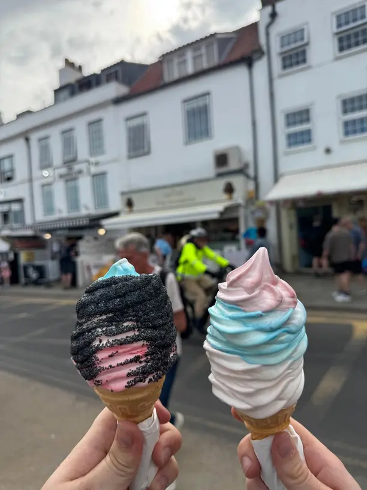
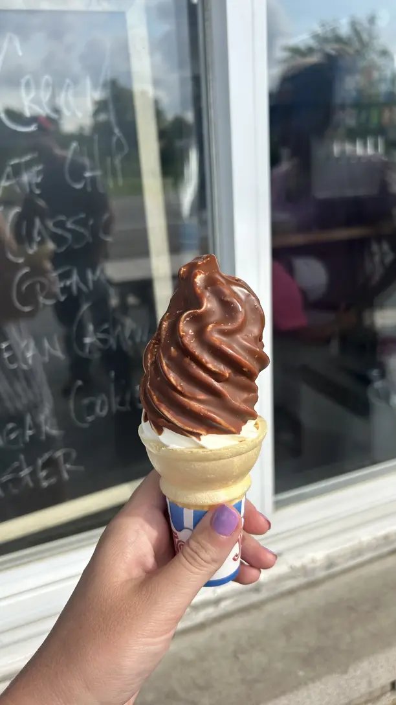

Lore
In 1926, Charles Taylor of Buffalo, NY patented an automatic ice cream maker that is considered to be the first soft serve machine. This machine produced a frozen dessert that was softer and less dense – a result of air introduced during the freezing process.
The soft serve bug spread. In 1934 Tom Carvel began serving melted ice cream from a broken-down truck. It was so popular that he then developed a soft serve formula, as well as a patented low-temperature ice cream machine. Dairy Queen quickly followed the trend and produced its own soft serve, too.

Soft serve soon became widely popular as the preferred way to consume ice cream for Americans. In the late 1940s, the treat boomed as it became more accessible. A United States distributor, Mister Softee, developed a soft-serve recipe that was compatible with machines. As the 1960s rolled on, the company sold its product from step vans, allowing the driver to conveniently dispense soft serve from a side window to eager customers. Equipped with bells to signal their approach, the musical accompaniment of these vans would later evolve into the ice cream truck songs that delight children (and adults!) across the country.

br